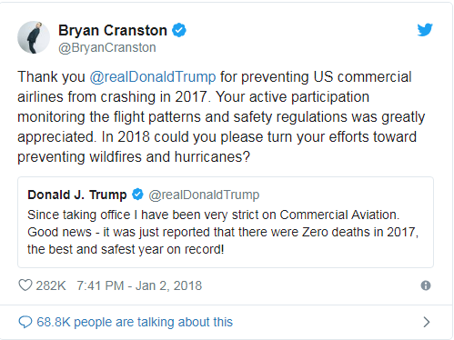
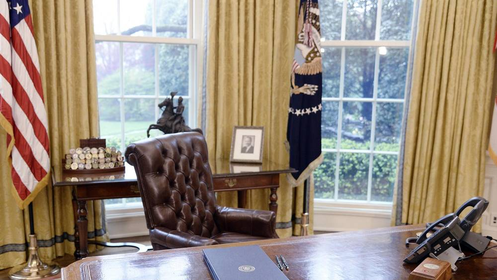

Since ushering in the New Year, Donald Trump has spent much of 2018 criticising the media, threatening North Korea with “bigger and more powerful” nuclear weapons, and gloating about various accomplishments. All of which the President of the United States has done on Twitter.
While many people have taken Trump to task, Bryan Cranston’s response to one particular Tweet about accomplishments in commercial aviation has been shared widely across the Internet.
“Thank you, Donald Trump, for preventing US commercial airlines from crashing in 2017,” the Breaking Bad actor wrote. “Your active participation monitoring the flight patterns and safety regulations was greatly appreciated. In 2018 could you please turn your efforts toward preventing wildfires and hurricanes?”
The comments were linked to the Trump Tweet, reading: “Since taking office I have been very strict on Commercial Aviation. Good news — it was just reported that there were Zero deaths in 2017, the best and safest year on record!”
Cranston has recently become an outspoken critic of Trump’s, once calling the President a “demagogue”. However, the Malcolm in the Middle actor has also said “f**k you' to anyone who wants Trump to fail.
“We've got to get away from this idea that our country is political football, and someone with a different opinion is the enemy,” he said. “Assume they love this country as much as you do, and there's always room for improvement. How can we make it better?"